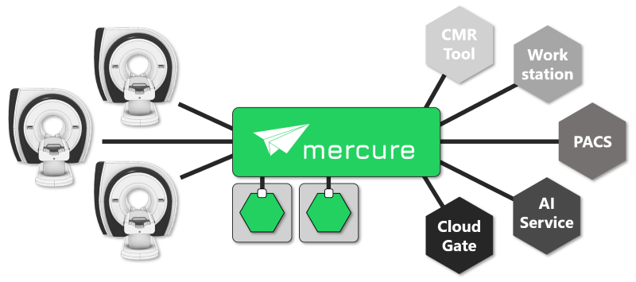

What is mercure?
{kind=link}
mercure is a flexible platform for orchestrating medical images in the standard DICOM format. Orchestration hereby refers to routing image series (or complete patient studies) to different destinations, or to process image series with different algorithms or AI models upon study reception. The action performed when a series or study is received (processing/routing/notification) is defined by rules that can be configured using mercure’s web-based user interface.
There are numerous use-cases for such a “DICOM orchestrator” or “DICOM router”:
It is often necessary to send certain studies to special image-analysis software (e.g., all cardiac MR studies to dedicated CMR software). Setting up the corresponding DICOM nodes on every scanner and keeping settings up-to-date is time-consuming and prone to errors
Manual transfer of studies to application-specific processing tools requires instructing staff which series to send to which analysis software. This can be challenging in larger departments, especially when new software tools or prototypes are installed frequently
Some scanners only allow configuring a limited number of destination nodes (sometimes only three), which can be insufficient for integrating all required analysis tools
Sometimes the same series should be sent to multiple destinations (e.g., to compare tools), or the incoming series should be distributed to multiple server instances (“load balancing”)
Images need to be anonymized before sending them to a destination (e.g., for collecting data for research studies that require de-identification)
Processing algorithms, for example AI-based CAD algorithms, should be integrated into the routine clinical workflow
Research studies should be tracked and notifications should be sent if specific exams have been performed
mercure can automate all these tasks. While other commercial DICOM routing solutions exist (often with a high price tag), mercure provides unique features that make it attractive especially in research-focused environments:
Powerful, yet intuitive language for defining orchestration rules
Easy-to-use interface with user accounts for managing rules, targets, and processing modules
Simple interface for integrating (and sharing) custom processing algorithms or AI models
Modularized architecture for high availability, reliability, and scalability
Extensive monitoring, auditing, and alerting capabilities
Support for polling large study amounts from PACS systems and injecting them into the processing pipeline
Database-backed collection of processing results with optional dashboard generation
Completely free and customizable
Note
mercure has been released as open-source package under the permissive MIT license. This means that it can be installed and used without paying any charges to the authors. Moreover, the source code can be downloaded and modified if specific functionality is required. mercure has been written mostly in the Python language and is easily customizable.
Architecture
mercure consists of multiple separated service modules that interact with each other. The modularized architecture ensures high reliability and customizability of the software. For example, in the (unlikely) event that one of the modules crashes or needs to be restarted, the other modules continue to function (e.g., the server continues to receive images from imaging devices). Moreover, all modules have been designed such that instances can be scaled-up if more processing power is needed (e.g., mercure can be configured to send out two or more series at the same time). Lastly, the modularized design makes it easy to extend mercure’s capabilities by replacing individual modules with customized versions, e.g. if additional transfer protocols should be supported.